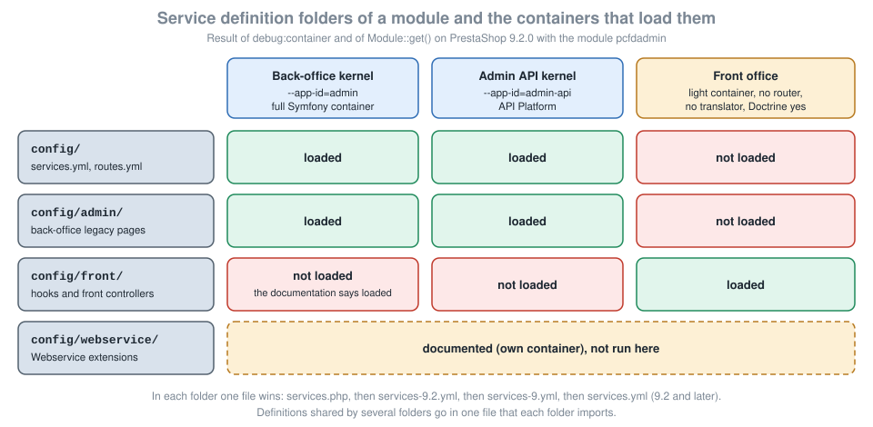

Module Services and Admin Controllers
|
This content was generated with the assistance of AI and should be verified against the official documentation before being relied on in production. |
This page was written against PrestaShop 9.2.0 (released on 2026-09-30) and checked on 2026-10-27. Everything shown was run on the official Docker image prestashop/prestashop:9.2.0 (PHP 8.5.12, MySQL 8.4, Symfony 6.4.46, Twig 3.27.1) in developer mode. The mechanisms are the ones of PrestaShop 9; controllers written for 8.x use another base class and a different way of reaching services, which the comparison table in the section on PrestaShopAdminController sets out. PrestaShop is open source software, so no plan or edition changes anything described here.
A module that does more than add a hook usually grows a small back-office application: a page of its own in the menu, a list or a calendar, some actions that change data, and services that hold the logic so that the page stays thin. PrestaShop 9 builds that on Symfony. The module declares its services in a YAML (or, since 9.2, PHP) file, routes URLs to controller methods in another YAML file, writes controllers as ordinary Symfony controllers on top of PrestaShopAdminController, protects them with a PHP attribute, and registers a tab so that the page has a menu entry and permissions. This page explains each of those pieces and, because the most surprising behaviour of PrestaShop modules is in the way services are split between containers, spends most of its length there. It sits after the page on module configuration, whose modern settings page already used the same controller pattern, and before the pages on front controllers and templates (the shop-window counterpart) and on upgrades, overrides and service decoration.
The running example is the Pocket Coffee roast calendar: a page under Catalog > Roasts that lists the next four roasting days, shows the last logged batch, lets an employee log a batch such as PC-ETH-001 and lets another employee purge the log. The module is called pcfdadmin. It has services for the calendar, a label and a shop-window banner, a controller with five actions, a hidden permission model made of one tab, and a throw-away module that was used to measure how PrestaShop loads service files.
What was run and what was not
The module pcfdadmin was installed with bin/console prestashop:module install. Its routes were listed with debug:router; its services were inspected with debug:container for the back-office kernel (--app-id=admin) and the Admin API kernel (--app-id=admin-api); its page, JSON actions and redirects were requested with an authenticated HTTP session; Module::get() was probed from a back-office request and from a front-office hook; permission denials were provoked by deleting the module’s own role rows of the super administrator profile for the duration of one request and restoring them; the tab was followed through a disable and enable of the module. A throw-away module with four service files measured the file priority of 9.2, and a PHP script that loads a services file with a bare Symfony container measured what a wildcard resource does with the index.php files that every module folder contains. bin/console lint:yaml, lint:twig, prestashop:linter:security-attribute find-missing, prestashop:linter:legacy-link and PHP CS Fixer with the PrestaShop standard were run on the module; the two linters list routes of other modules, not of this one.
Not run: the config/webservice/ folder, #[DemoRestricted] with the demo mode on, a second employee profile with real restricted permissions (the denials were provoked by editing role rows), legacy ModuleAdminController tabs, multistore permissions, and the route option _parent that the 9.x documentation describes for pages without a tab; a search of the 9.2.0 source found no use of it, so it is not documented here as working.
Where module code runs: three containers
A PrestaShop request is served by one of several kernels, each with its own service container. A module has to know which one its code runs in because a service that exists in one does not exist in another.
-
The back-office kernel (
AdminKernel, application idadmin) serves the modern, Symfony pages: every route in a module’sroutes.yml. It has the full Symfony container: router, translator, Twig, forms, Doctrine, security, the PrestaShop adapters. -
The Admin API kernel (
AdminAPIKernel, application idadmin-api) serves the REST API and has its own container, built from the same module service files as the back-office one. -
The front-office container is not a Symfony kernel. It is a light container that PrestaShop builds by hand for hooks and
ModuleFrontControllerpages. It holds Doctrine and a short list of core services; it has no router, no translator and no Twig.
The module class itself is instantiated in all of them, and Module::get('service.id') resolves a service against the container of the current request. That is why the same line $this->get('router') works in getContent() and raises an exception in a front-office hook.

The picture is the result of these measurements on 9.2.0 and is explained in the next section.
Service definition files
Folders and which container each reaches
PrestaShop reads the service definitions of every installed module from a config folder of the module and from three sub-folders, one per kind of container. The compiler pass that does it (LoadServicesFromModulesPass) is built for one container name at a time: the empty name for the Symfony kernels, admin/ and front/ for the legacy containers.
| Folder | Documentation says | Measured on 9.2.0 |
|---|---|---|
|
Symfony container only: all Symfony components and PrestaShop bundle services. |
Defined in the back-office kernel and in the Admin API kernel. Not in the front container: |
|
Symfony container and the admin legacy container. |
Defined in both Symfony kernels ( |
|
Symfony container and the front legacy container. |
Defined in the front container only. |
|
Symfony container and the Webservice container. |
Not run. |
The difference in the config/front/ row is worth remembering: do not rely on a front-office service being available from a back-office controller or from a console command, even though the documentation table says it is. Put what both sides need in a file that each folder imports (next section).
The measurement of what a front hook can reach, on the same module, was:
Service asked for with $this->get() in hookDisplayHome() |
Result |
|---|---|
|
|
|
found |
|
found |
|
|
|
|
|
|
and in getContent() of a back-office request: router, translator, prestashop.adapter.legacy.configuration, pcfdadmin.admin.roast_label, the controller and RoastCalendar were all found, pcfdadmin.front.roast_banner was not. The light front container is described by the core files config/services/common.yml and config/services/front/services_*.yml, which import the adapter and core service files; that is why prestashop.adapter.legacy.configuration is available there.
Source: PrestaShop devdocs: Services
File names and their priority
Until 9.1 each folder had one possible file, services.yml. Since 9.2 PrestaShop loads the first of these that exists in the folder and ignores the rest, so a module can ship a file per PrestaShop generation:
| Order | File |
|---|---|
1 |
|
2 |
|
3 |
|
4 |
|
The source of the compiler pass confirms the list and the early break; the behaviour was measured with a throw-away module whose four files each set a different value of the same parameter. With all four present the container reported services.php; after removing that file it reported services-9.2.yml, then services-9.yml, then services.yml. Because only one file is read, a more specific file does not add to a less specific one: if services-9.2.yml exists, services.yml is not loaded, so the specific file must import it when it wants both (imports: - { resource: services.yml }). The same priority applies in config/admin/, config/front/ and config/webservice/. A module that has to run on 9.0 and 9.1 as well keeps a plain services.yml and adds services-9.2.yml for the new behaviour. A PHP file is the way to branch on the version:
<?php
// config/services.php (PrestaShop 9.2 and later)
namespace Symfony\Component\DependencyInjection\Loader\Configurator;
return static function (ContainerConfigurator $container): void {
if (version_compare(_PS_VERSION_, '9.2.0', '>=')) {
$container->import('services/services-ps-9.2.php');
return;
}
$container->import('services/services-ps-9.php');
};Definitions shared between folders
The three kinds of container cannot see each other’s folder, so a service that several of them need (here the roast calendar) is declared once in a file that each folder imports. The services of the folders are merged into the container they reach, which is how RoastCalendar ended up in the two Symfony kernels (through config/services.yml and config/admin/services.yml, both of which import it, a harmless duplicate) and in the front container.
# Definitions shared by every container: the Symfony one (back office), the admin legacy one and the front one.
# No autowiring here: the legacy containers are built by hand, so arguments are explicit.
services:
_defaults:
public: true
PrestaShop\Module\Pcfdadmin\Roast\RoastCalendar:
arguments:
- '@prestashop.adapter.legacy.configuration'Source: PrestaShop devdocs: Services
The full container file imports it and declares the controller. The defaults make the services private, autowired and autoconfigured; the controller needs autowire and autoconfigure or Symfony cannot give it its container, as the measurement of the previous module showed (has no container set, did you forget to define it as a service subscriber?).
imports:
- { resource: ./common.yml }
services:
_defaults:
public: false
autowire: true
autoconfigure: true
# Controllers are services whose id is the fully qualified class name.
PrestaShop\Module\Pcfdadmin\Controller\RoastController: ~Source: PrestaShop devdocs: Services
The two light files declare only what their container needs. Their definitions use explicit arguments, because the legacy containers are built by hand and the documentation asks not to use named arguments there.
imports:
- { resource: ../common.yml }
services:
_defaults:
public: true
pcfdadmin.admin.roast_label:
class: PrestaShop\Module\Pcfdadmin\Roast\RoastLabel
arguments:
- '@PrestaShop\Module\Pcfdadmin\Roast\RoastCalendar'imports:
- { resource: ../common.yml }
services:
_defaults:
public: true
pcfdadmin.front.roast_banner:
class: PrestaShop\Module\Pcfdadmin\Roast\RoastBanner
arguments:
- '@PrestaShop\Module\Pcfdadmin\Roast\RoastCalendar'What a service definition can say
Everything the Symfony container offers is available in the full container; the legacy containers accept the same syntax but contain fewer core services. The keys that modules use:
| Key | Meaning |
|---|---|
|
Values applied to every service of the file: |
|
Whether |
|
Constructor and method arguments are resolved from their type hints. |
|
Tags are added from the class: a class extending |
|
The class; optional when the id is the class name. |
|
Positional arguments: |
|
Inherit another definition. The core abstract |
|
Explicit tags, for example |
|
Wrap an existing service; see the page on decoration. |
|
Register every class of a folder as a service (see the next table row). |
|
Another id for an existing service. |
|
Load another file. |
The wildcard pitfall. A definition with a resource registers every class found in a folder, which saves one line per class. Every module folder contains an index.php redirect stub, and the loader would include it. The documentation says "you might be redirected whenever you open your shop"; the measurement shows the result: a script that loads a services file with resource: "../src/*" through a bare Symfony\Component\DependencyInjection\ContainerBuilder and YamlFileLoader printed nothing at all, not even the line written after the load, because the stub ends with exit;. With the exclusion the same script loaded and listed the service.
services:
_defaults:
public: true
autowire: true
autoconfigure: true
# Register every class of src/ as a service, but never the index.php redirect stubs.
PrestaShop\Module\Pcfdadmin\:
resource: '../src/*'
exclude:
- '../src/index.php'
- '../src/*/index.php'The listing above is the correct form. The measurement used a throw-away module and the same file without the two exclude lines; the module was uninstalled and deleted afterwards. In a live installation a definition without the exclusion ends the process that compiles the container, so the symptom is a shop that stops answering rather than an error message that names the file.
Reaching a service
| From | How |
|---|---|
A Symfony controller |
Constructor injection (a service used by several actions) or method injection (a service used by one action), by type or with |
Another service |
Constructor arguments, in the definition or autowired. |
The main module class, back office |
|
The main module class, front office |
|
Any code with the Symfony container |
|
Twig |
Not services themselves; pass the data from the controller. |
PrestaShopAdminController in detail
Anatomy of a controller
Here is the controller of the roast calendar. It shows the three injection styles, the permission attributes of the next section, a CSRF token, JSON and redirect responses, a flash message and the translation call.
<?php
declare(strict_types=1);
namespace PrestaShop\Module\Pcfdadmin\Controller;
use PrestaShop\Module\Pcfdadmin\Roast\RoastCalendar;
use PrestaShopBundle\Controller\Admin\PrestaShopAdminController;
use PrestaShopBundle\Security\Attribute\AdminSecurity;
use PrestaShopBundle\Security\Attribute\DemoRestricted;
use Symfony\Component\DependencyInjection\Attribute\Autowire;
use Symfony\Component\HttpFoundation\JsonResponse;
use Symfony\Component\HttpFoundation\RedirectResponse;
use Symfony\Component\HttpFoundation\Request;
use Symfony\Component\HttpFoundation\Response;
class RoastController extends PrestaShopAdminController
{
// Constructor injection: autowired from the type, RoastCalendar is declared in config/common.yml.
public function __construct(private readonly RoastCalendar $calendar)
{
}
#[AdminSecurity("is_granted('read', request.get('_legacy_controller'))", message: 'You do not have permission to view the roast calendar.')]
public function indexAction(
Request $request,
// Method injection: a service picked by id, only built when this action runs.
#[Autowire(service: 'prestashop.adapter.legacy.configuration')]
$configuration,
): Response {
return $this->render('@Modules/pcfdadmin/views/templates/admin/roasts.html.twig', [
'layoutTitle' => $this->trans('Roast calendar', [], 'Modules.Pcfdadmin.Admin'),
'nextRoasts' => $this->calendar->next(4),
'lastRoast' => $configuration->get('PCFDADMIN_LAST_ROAST'),
'logUrl' => $this->generateUrl('pcfdadmin_roast_log'),
'csrfToken' => $this->container->get('security.csrf.token_manager')->getToken('pcfdadmin_log')->getValue(),
]);
}
#[DemoRestricted(redirectRoute: 'pcfdadmin_roasts')]
#[AdminSecurity("is_granted('update', request.get('_legacy_controller'))", message: 'You do not have permission to log a roast.', jsonResponse: true)]
public function logAction(Request $request): JsonResponse
{
if (!$this->isCsrfTokenValid('pcfdadmin_log', (string) $request->request->get('csrf'))) {
return new JsonResponse(['error' => 'Invalid CSRF token.'], Response::HTTP_BAD_REQUEST);
}
$batch = trim((string) $request->request->get('batch'));
if (!preg_match('/^PC-[A-Z]{3}-\d{3}$/', $batch)) {
return new JsonResponse(['error' => 'Batch codes look like PC-ETH-001.'], Response::HTTP_UNPROCESSABLE_ENTITY);
}
$this->getConfiguration()->set('PCFDADMIN_LAST_ROAST', $batch . ' ' . date('Y-m-d'));
return new JsonResponse(['logged' => $batch]);
}
#[AdminSecurity("is_granted('delete', request.get('_legacy_controller'))", message: 'You do not have permission to purge the roast log.', redirectRoute: 'pcfdadmin_roasts')]
public function purgeAction(): RedirectResponse
{
$this->getConfiguration()->remove('PCFDADMIN_LAST_ROAST');
$this->addFlash('success', $this->trans('The roast log was purged.', [], 'Modules.Pcfdadmin.Admin'));
return $this->redirectToRoute('pcfdadmin_roasts');
}
#[AdminSecurity("is_granted('read', request.get('_legacy_controller'))")]
public function showAction(string $batch): JsonResponse
{
return new JsonResponse(['batch' => $batch, 'weekday' => $this->calendar->weekday()]);
}
#[AdminSecurity("is_granted('read', request.get('_legacy_controller'))")]
public function pingAction(): JsonResponse
{
return new JsonResponse(['pong' => true, 'url' => $this->generateUrl('pcfdadmin_ping')]);
}
}The services the controller uses:
<?php
declare(strict_types=1);
namespace PrestaShop\Module\Pcfdadmin\Roast;
use PrestaShop\PrestaShop\Core\ConfigurationInterface;
/**
* Computes the roasting days of Pocket Coffee: one fixed weekday, every week.
*/
class RoastCalendar
{
public function __construct(private readonly ConfigurationInterface $configuration)
{
}
public function weekday(): int
{
return max(1, min(7, (int) $this->configuration->get('PCFDADMIN_ROAST_WEEKDAY', 1)));
}
/**
* @return \DateTimeImmutable[] the next $count roasting days, today included when it is one
*/
public function next(int $count, ?\DateTimeImmutable $from = null): array
{
$day = ($from ?? new \DateTimeImmutable('today'))->setTime(0, 0);
$ahead = ($this->weekday() - (int) $day->format('N') + 7) % 7;
$day = $day->modify('+' . $ahead . ' days');
$days = [];
for ($i = 0; $i < $count; ++$i) {
$days[] = $day->modify('+' . (7 * $i) . ' days');
}
return $days;
}
}<?php
declare(strict_types=1);
namespace PrestaShop\Module\Pcfdadmin\Roast;
/**
* Human readable summary, used from the legacy back-office container (config/admin/).
*/
class RoastLabel
{
private const NAMES = [1 => 'Monday', 2 => 'Tuesday', 3 => 'Wednesday', 4 => 'Thursday', 5 => 'Friday', 6 => 'Saturday', 7 => 'Sunday'];
public function __construct(private readonly RoastCalendar $calendar)
{
}
public function describe(): string
{
$next = $this->calendar->next(1)[0];
return sprintf('Pocket Coffee roasts every %s. Next roast: %s.', self::NAMES[$this->calendar->weekday()], $next->format('Y-m-d'));
}
}Source: PrestaShop devdocs: Services
<?php
declare(strict_types=1);
namespace PrestaShop\Module\Pcfdadmin\Roast;
/**
* Text for the shop window, used from the light front-office container (config/front/).
*/
class RoastBanner
{
public function __construct(private readonly RoastCalendar $calendar)
{
}
public function text(): string
{
return 'Next roast: ' . $this->calendar->next(1)[0]->format('l j F');
}
}The Twig template extends the back-office layout. The alias @Modules points to the modules folder, so the template is addressed as @Modules/pcfdadmin/views/templates/admin/roasts.html.twig; the layoutTitle variable is the title of the page.
{% extends '@PrestaShop/Admin/layout.html.twig' %}
{% trans_default_domain 'Modules.Pcfdadmin.Admin' %}
{% block content %}
<div class="card">
<h3 class="card-header"><i class="material-icons">local_cafe</i> {{ 'Next roasting days'|trans }}</h3>
<div class="card-body">
<ul>
{% for day in nextRoasts %}
<li>{{ day|date('Y-m-d') }}</li>
{% endfor %}
</ul>
<p>{{ 'Last logged roast'|trans }}: {{ lastRoast ?: '-' }}</p>
<form id="pcfdadmin-log" data-url="{{ logUrl }}" data-csrf="{{ csrfToken }}">
<input type="text" name="batch" placeholder="PC-ETH-001" class="form-control">
<button type="submit" class="btn btn-primary mt-2">{{ 'Log roast'|trans }}</button>
</form>
</div>
</div>
{% endblock %}
{% block javascripts %}
{{ parent() }}
<script>
document.getElementById('pcfdadmin-log').addEventListener('submit', async (event) => {
event.preventDefault();
const form = event.currentTarget;
const body = new URLSearchParams({ batch: form.elements.batch.value, csrf: form.dataset.csrf });
// X-Requested-With marks the request as XHR, so a permission failure answers with JSON.
const response = await fetch(form.dataset.url, { method: 'POST', body, headers: { 'X-Requested-With': 'XMLHttpRequest' } });
const data = await response.json();
window.alert(data.logged ? 'Logged ' + data.logged : (data.error || data.message));
});
</script>
{% endblock %}The main module class carries the tab and, in this example, the two probes of the legacy containers.
<?php
/**
* Pocket Coffee: roast calendar back-office page (Symfony controller, services, tab).
*/
declare(strict_types=1);
if (!defined('_PS_VERSION_')) {
exit;
}
if (file_exists(__DIR__ . '/vendor/autoload.php')) {
require_once __DIR__ . '/vendor/autoload.php';
}
class Pcfdadmin extends Module
{
public const KEY_WEEKDAY = 'PCFDADMIN_ROAST_WEEKDAY';
public const KEY_LAST_ROAST = 'PCFDADMIN_LAST_ROAST';
public function __construct()
{
$this->name = 'pcfdadmin';
$this->tab = 'administration';
$this->version = '1.0.0';
$this->author = 'Pocket Coffee';
$this->need_instance = 0;
$this->ps_versions_compliancy = ['min' => '9.0.0', 'max' => '9.99.99'];
parent::__construct();
$this->displayName = $this->trans('Pocket Coffee roast calendar', [], 'Modules.Pcfdadmin.Admin');
$this->description = $this->trans('Back-office roast calendar built with a Symfony controller.', [], 'Modules.Pcfdadmin.Admin');
// One tab per back-office page. It carries the permissions (ROLE_MOD_TAB_ADMINPCFDADMINROASTS_*)
// and, when "visible" is true, a link in the left menu.
$this->tabs = [
[
'route_name' => 'pcfdadmin_roasts',
'class_name' => 'AdminPcfdadminRoasts',
'visible' => true,
'name' => 'Roasts',
'parent_class_name' => 'AdminCatalog',
'icon' => 'local_cafe',
'wording' => 'Roasts',
'wording_domain' => 'Modules.Pcfdadmin.Admin',
],
];
}
public function isUsingNewTranslationSystem(): bool
{
return true;
}
public function install(): bool
{
return parent::install()
&& $this->registerHook('displayHome')
&& Configuration::updateGlobalValue(self::KEY_WEEKDAY, 1);
}
public function uninstall(): bool
{
return Configuration::deleteByName(self::KEY_WEEKDAY)
&& Configuration::deleteByName(self::KEY_LAST_ROAST)
&& parent::uninstall();
}
/**
* Back-office legacy context: services of config/admin/ and config/services.yml are reachable.
*/
public function getContent(): string
{
$label = $this->get('pcfdadmin.admin.roast_label');
return '<div class="alert alert-info">' . $label->describe() . '</div>';
}
/**
* Front-office legacy context: only the services of config/front/ are reachable through $this->get().
*/
public function hookDisplayHome(array $params): string
{
$banner = $this->get('pcfdadmin.front.roast_banner');
return '<p class="pcfdadmin-banner">' . htmlspecialchars($banner->text(), ENT_QUOTES, 'UTF-8') . '</p>';
}
}The Composer file registers the namespace, and composer dump-autoload generates the vendor/autoload.php that the main class requires:
{
"name": "pocketcoffee/pcfdadmin",
"description": "Pocket Coffee roast calendar",
"type": "prestashop-module",
"license": "AFL-3.0",
"autoload": { "psr-4": { "PrestaShop\\Module\\Pcfdadmin\\": "src/" } },
"config": { "prepend-autoloader": false },
"require": { "php": ">=8.1" }
}Helpers of the base class
PrestaShopAdminController extends Symfony’s AbstractController, so render(), redirectToRoute(), generateUrl(), addFlash(), isGranted(), isCsrfTokenValid(), json() and createForm() work as in any Symfony application. PrestaShop adds these protected helpers, read from the 9.2.0 source:
| Helper | Purpose |
|---|---|
|
The Configuration service and the PHP ini reader. |
|
The current shop, language, currency, country and employee as value objects. |
|
Legacy controller data, API client, kernel environment, feature flags. |
|
Run a CQRS command or query (see CQRS and domain). |
|
Grid helpers (see grid and forms). |
|
Dispatch a hook from the controller. |
|
Translate. The order is parameters, then domain. |
|
Link to the contextual help sidebar. |
|
Turn exceptions and form errors into messages. |
|
Flash several error messages or the errors of a form. |
|
Imperative permission checks for rights that depend on data. |
|
Demo-mode checks. |
FrameworkBundleAdminController and PrestaShopAdminController
FrameworkBundleAdminController (8.x, deprecated in 9.0, removed in 10.0) |
PrestaShopAdminController (9.x) |
|
|---|---|---|
Service access |
|
Constructor or method injection; no |
Registration |
Often tagged |
A service whose id is the class name, with |
|
|
|
Commands and queries |
|
|
Doctrine |
|
Inject |
Security |
|
|
The argument order of trans() is the trap: code ported from 8.x that calls $this->trans('Text', 'Modules.Mymodule.Admin') passes the domain where PrestaShop 9 expects the parameters. A PHP array is required there, so the mistake fails loudly with a type error rather than silently. The form type of the modern configuration page keeps the old order (TranslatorAwareType::trans($key, $domain, $parameters)), so one module can use both orders in different classes.
Rendering
The back-office layout reads these variables from the template context; the controller of a normal page sets the ones it needs.
| Variable | Meaning |
|---|---|
|
The page title. |
|
The buttons of the toolbar: a list of entries with |
|
Booleans for the Addons search button, bulk actions and the filter status button. |
|
Booleans for the content header and the help sidebar. |
|
URL of the help button, usually from |
Routes
Routes live in config/routes.yml of the module and are loaded for the back-office kernel. Four things are specific to PrestaShop.
# Every route of a module is mounted under /modules by PrestaShop: path /pcfdadmin/roasts is served at
# <admin folder>/index.php/modules/pcfdadmin/roasts?_token=...
pcfdadmin_roasts:
path: /pcfdadmin/roasts
methods: [GET]
defaults:
_controller: 'PrestaShop\Module\Pcfdadmin\Controller\RoastController::indexAction'
# Name of the Tab (class_name): permissions, menu highlight and Link::getAdminLink() resolve through it.
_legacy_controller: AdminPcfdadminRoasts
_legacy_link: AdminPcfdadminRoasts
pcfdadmin_roast_log:
path: /pcfdadmin/roasts/log
methods: [POST]
defaults:
_controller: 'PrestaShop\Module\Pcfdadmin\Controller\RoastController::logAction'
_legacy_controller: AdminPcfdadminRoasts
# "Class:action" lets Link::getAdminLink('AdminPcfdadminRoasts', true, [], ['action' => 'log']) find this route.
_legacy_link: AdminPcfdadminRoasts:log
pcfdadmin_roast_purge:
path: /pcfdadmin/roasts/purge
methods: [POST]
defaults:
_controller: 'PrestaShop\Module\Pcfdadmin\Controller\RoastController::purgeAction'
_legacy_controller: AdminPcfdadminRoasts
_legacy_link: AdminPcfdadminRoasts:purge
pcfdadmin_roast_show:
path: /pcfdadmin/roasts/{batch}
methods: [GET]
defaults:
_controller: 'PrestaShop\Module\Pcfdadmin\Controller\RoastController::showAction'
_legacy_controller: AdminPcfdadminRoasts
# A placeholder only matches when its requirement matches; anything else is a 404.
requirements:
batch: 'PC-[A-Z]{3}-\d{3}'
pcfdadmin_ping:
path: /pcfdadmin/ping
methods: [GET]
defaults:
_controller: 'PrestaShop\Module\Pcfdadmin\Controller\RoastController::pingAction'
_legacy_controller: AdminPcfdadminRoasts
# Serve the route at /pcfdadmin/ping instead of /modules/pcfdadmin/ping.
_disable_module_prefix: trueThe prefix. PrestaShop mounts every module route under /modules. The route pcfdadmin_roasts with the path /pcfdadmin/roasts is served at <admin folder>/index.php/modules/pcfdadmin/roasts, and debug:router listed /modules/pcfdadmin/roasts. Writing /modules/... in the file produces /modules/modules/.... The route option _disable_module_prefix: true removes the prefix: pcfdadmin_ping is served at /admin170.../index.php/pcfdadmin/ping and the prefixed URL answered 404.
The security token. Every URL generated for the back office carries a _token query parameter. A request without a valid token does not reach the controller: it is answered with a page titled "Invalid token" that offers a link with the correct token. Generating URLs through the router (generateUrl(), router->generate(), path() in Twig) or through Link::getAdminLink() adds the token; building a URL by hand does not. Both the router and getAdminLink() added the token even when getAdminLink() was called with its $withToken argument set to false.
_legacy_controller and _legacy_link. The back office was written around legacy controller names (AdminProducts) and a lot of machinery still looks them up. _legacy_controller gives the route the name of the tab it belongs to, which is the key of its permission roles, its menu entry and its breadcrumb, and it is what request.get('_legacy_controller') evaluates to in #[AdminSecurity]. _legacy_link makes Link::getAdminLink() resolve to the route. Calls and results measured:
| Call | Result |
|---|---|
|
|
|
|
|
|
|
|
The prestashop:linter:legacy-link command lists routes that have no _legacy_link; it listed none of this module’s. Appending query parameters to the result of getAdminLink() by hand does not work for Symfony routes; pass them in the arrays.
Placeholders and requirements. A placeholder in the path is passed to the action by name (showAction(string $batch)); the requirements entry restricts what it matches. GET .../modules/pcfdadmin/roasts/PC-ETH-001 answered {"batch":"PC-ETH-001","weekday":1} and GET .../roasts/oops answered 404. Define fixed paths such as /roasts/log before a route with a placeholder in the same position; the first matching route wins.
Security
Layers
A back-office action is protected by four independent layers, and a module normally uses all of them.
-
The URL token. Described in the previous section. It stops links from other sites and typed URLs.
-
Permissions per tab.
#[AdminSecurity]checks that the employee’s profile holds a role. -
CSRF tokens for changes. As defence in depth, a form or an XHR that changes data can carry a Symfony CSRF token of its own, tied to the action. The controller above creates one with the
security.csrf.token_managerservice from the container the base class gives it, puts it in the page, and checks it withisCsrfTokenValid(). A call with a wrong token answered{"error":"Invalid CSRF token."}with status 400.purgeActionabove checks no token of its own, so for it the URL_tokenis the only protection against cross-site requests; a real purge button should carry and check apcfdadmin_purgetoken in the same way. Symfony forms addform[_token]by themselves. -
Demo mode.
#[DemoRestricted]blocks an action when the shop runs in demo mode (_PS_MODE_DEMO_). It was not run.
Roles and permissions
When a tab is created PrestaShop creates four roles for it, named from the tab’s class_name in capitals: ROLE_MOD_TAB_ADMINPCFDADMINROASTS_CREATE, _READ, _UPDATE and _DELETE. Four more are created for every module (ROLE_MOD_MODULE_PCFDADMIN_CREATE and so on), which the module manager uses for its own actions. The roles of the new tab are granted to the profile of the employee who installs the module and to the super administrator; for any other profile the merchant ticks them in Advanced Parameters > Team > Permissions. The ps_access table links profiles and roles. The convention for what each role means:
| Role | Used for |
|---|---|
READ |
Showing a page or listing data. The index action needs this and only this. |
CREATE |
Adding an item. |
UPDATE |
Changing an item. |
DELETE |
Removing an item. |
A page that edits settings is allowed to employees who hold any of CREATE, UPDATE or DELETE, as the core settings pages do.
The AdminSecurity attribute
#[PrestaShopBundle\Security\Attribute\AdminSecurity] can be put on a class (it then applies to every action) or on a method; both are evaluated, class first. Its first argument is an expression for Symfony’s is_granted; request.get('_legacy_controller') reads the tab name from the route, so the same expression works for every route of the tab. The attribute replaces the @AdminSecurity annotation, which still exists in 9.2.0 as a deprecated class and logs a deprecation when used. The older ModuleActivated annotation does not exist in 9.2.0; a module that must refuse access when it is disabled has to check it itself, because the routes of a disabled module still answered in the measurement (the JSON action returned 200 after prestashop:module disable).
| Argument | Meaning |
|---|---|
first argument ( |
The expression, for example |
|
The text shown or returned when access is denied (default "Access Denied."). |
|
Translation domain of the message (default |
|
Route to redirect to when denied; the message is flashed as an error. |
|
Query parameters of the current request copied to the redirect route. |
|
Redirect URL when no route is given (deprecated). |
|
Answer with JSON when denied. |
|
Throw an HTTP exception with this status instead of an access-denied exception. |
|
The code of the exception. |
What each argument produced, tested by deleting a role row of the super administrator for one request:
| Action and missing role | Response |
|---|---|
|
HTTP 302 to |
|
HTTP 403, |
|
A generic "403 Forbidden" error page. A status code bypasses the access-denied listener, which only handles |
|
HTTP 403 error page whose title is the message followed by "(403 Forbidden)". |
The console command prestashop:linter:security-attribute find-missing lists routes without the attribute (three core routes of the Marketplace module in this install, none of the module under test) and prestashop:linter:security-attribute list lists those that have it.
Tabs
A tab is a row of the ps_tab table. It gives a page a menu entry, a breadcrumb and a set of permission roles. Modules declare them in the $tabs property of the main class, which PrestaShop reads at install and removes at uninstall.
| Key | Required | Meaning |
|---|---|---|
|
yes |
The tab’s technical name; it must equal |
|
no |
The Symfony route the menu entry opens. |
|
no |
The label; a string for all languages, or an array indexed by locale or language code ( |
|
no |
Translation key and domain of the label, so the translation system can translate it (since 1.7.8). |
|
no |
Where the entry appears: another tab’s |
|
no |
|
|
no |
A Material icon name, if any. |
The tab in the example is class_name: AdminPcfdadminRoasts, parent_class_name: AdminCatalog, visible: true. After installation ps_tab contained one row with route_name = pcfdadmin_roasts, active = 1 and enabled = 1, the back-office menu showed "Roasts" under Catalog (the list item subtab-AdminPcfdadminRoasts was marked as the active one on the page), and the four roles existed and were granted to profile 1. Disabling the module with prestashop:module disable pcfdadmin set enabled to 0 (the entry disappears from the menu) and left active at 1; enabling it set enabled back to 1. The page and the JSON actions kept answering while the module was disabled.
Menu parents available as parent_class_name: for Sell, AdminParentOrders, AdminCatalog, AdminParentCustomer, AdminParentCustomerThreads, AdminStats; for Improve, AdminParentModulesSf, AdminParentThemes, AdminParentShipping, AdminParentPayment, AdminInternational; for Configure, ShopParameters and AdminAdvancedParameters; and AdminDashboard. A top-level entry of the module’s own is possible but discouraged; the documentation lists these parents as of 1.7 and the 9.2 install uses the same names for the ones tried here.
Hidden tabs. A tab with visible => false exists only for permissions; the modern settings page of the previous page uses one. Controllers placed in the controllers/admin/ folder of a module (legacy ModuleAdminController classes) are registered as hidden tabs automatically when no visible tab exists for them. That legacy mechanism was not run.
Manual tabs. A module can also create the Tab object itself, which is what to do when the tab depends on a condition or must be created after install (for example on enable). The documented pattern, not run here, installs the tab in install() and enable() and removes it in uninstall() and disable():
private function installTab(): bool
{
$tabId = (int) Tab::getIdFromClassName('AdminPcfdadminRoasts');
$tab = new Tab($tabId ?: null);
$tab->active = 1;
$tab->class_name = 'AdminPcfdadminRoasts';
$tab->route_name = 'pcfdadmin_roasts';
$tab->name = [];
foreach (Language::getLanguages() as $lang) {
$tab->name[$lang['id_lang']] = $this->trans('Roasts', [], 'Modules.Pcfdadmin.Admin', $lang['locale']);
}
$tab->id_parent = (int) Tab::getIdFromClassName('AdminCatalog');
$tab->module = $this->name;
return $tab->save();
}Pitfalls
| Symptom | Cause and fix |
|---|---|
|
The controller is not a service, or lacks |
|
The hook runs in the front container. Pass what is needed from a controller, or declare a service in |
A service defined in |
|
The shop shows a blank page or exits while the container compiles |
A wildcard |
|
Only the first existing file is read. Import |
|
The URL was built by hand. Generate it through the router or |
|
The roles of the tab were not granted to that profile. |
|
A route with |
The controller works in the browser and the route is 404 in a test |
Module routes are mounted under |
A disabled module’s page is still reachable |
Routes of installed modules stay loaded. Check |
Doctrine repositories not available in the controller |
They are not reachable through the base class; inject them. |
Version notes
| Version | Change |
|---|---|
1.7.3 |
Modules can declare Symfony services in |
1.7.5 to 1.7.7 |
|
1.7.6 |
Light legacy containers with |
8.1 |
Module autoloaders and service files are registered before the compiler passes, so autoconfiguration, |
9.0 |
|
9.2 |
|
10.0 (planned) |
|